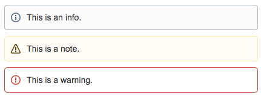

A script to import a named markdown document into Confluence. It handles inline images as well as code blocks. Also there is support for some custom markdown tags for use with commonly used Confluence macros.
The file will be converted into HTML or Confluence storage markup when required. Then a page will be created in the space or if it already exists, the page will be uploaded.
Python should be installed with the following required modules:
Instructions on installing Python and modules can be found here.
To use it, you will need your Confluence username, password and organisation name. If you use Google Apps to sign in to Confluence, you can still have a username & password for your Confluence account. Just logout and follow the "Unable to access your account?" link from the sign in page, which lets you set a new password.
You will also need the organisation name that is used in the subdomain. For example the URL: https://fawltytowers.atlassian.net/wiki/ would indicate an organsiation name of fawltytowers.
These can be specified at runtime or set as Confluence environment variables (eg add to your ~/.profile or ~/.bash_profile on Mac OS):
On Windows, this can be set via system properties.
The minimum accepted parameters are the markdown file to upload as well as the Confluence space key you wish to upload to. For the following examples assume 'Test Space' with key: TST.
Mandatory Confluence parameters can also be set here if not already set as environment variables:
Use -h to view a list of all available options.
Use -a or --ancestor to designate the name of a page which the page should be created under.
Use -d or --delete to delete the page instead of create it. Obviously this won't work if it doesn't already exist.
Use -n or --nossl to specify a non-SSL url, i.e. http:// instead of https://.
The original markdown to HTML conversion is performed by the Python markdown library. Additionally, the page name is taken from the first line of the markdown file, usually assumed to be the title. In the case of this document, the page would be called: Markdown to Confluence Converter.
Standard markdown syntax for images and code blocks will be automatically converted. The images are uploaded as attachments and the references updated in the HTML. The code blocks will be converted to the Confluence Code Block macro and also supports syntax highlighting.
The code supports some custom markdown syntax which can be used to render certain Confluence macros.
Markdown syntax:
Renders as:
